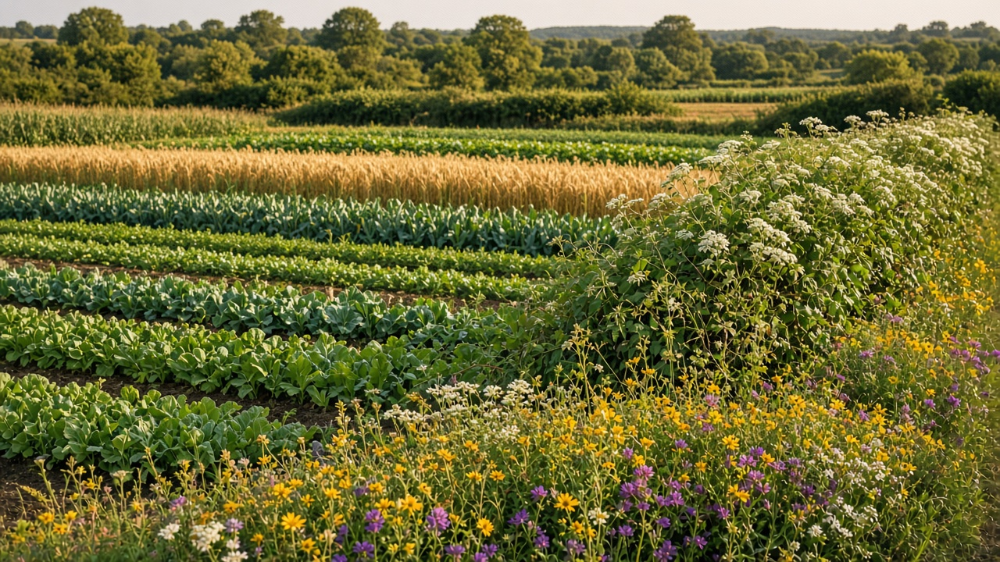
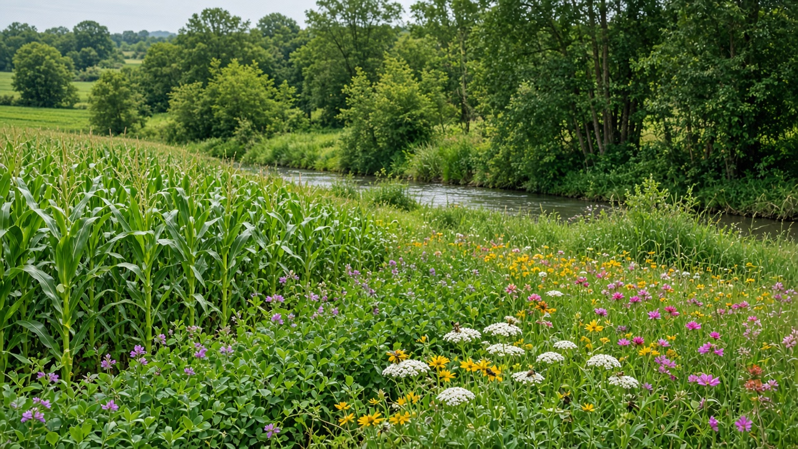
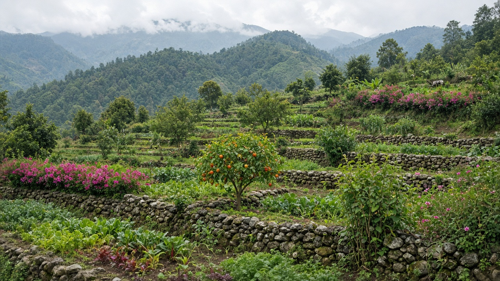

Agroecology and Farm Biodiversity
Published on August 20, 2026

Agroecology applies ecological principles to the design and management of agricultural systems, emphasizing diversity, recycling of nutrients, and synergies between crops, livestock, and surrounding habitats. Farm biodiversity encompasses the variety of plants, animals, microorganisms, and ecological interactions within and around cultivated fields. Polycultures, hedgerows, riparian buffers, and wildflower strips create habitat for pollinators, predators, and soil organisms that provide natural pest control and pollination services. Maintaining diverse genetic resources through heirloom varieties and landraces helps communities adapt to changing climates and resist emerging diseases.
Traditional farming knowledge often holds valuable insights into intercropping patterns, seasonal timing, and companion planting that modern science increasingly validates. Agroecological farms typically use fewer external inputs because internal biological processes cycle nutrients and regulate populations of harmful organisms. Landscape-level planning connects fragmented habitats through ecological corridors, allowing wildlife movement and gene flow between protected areas and working lands. Participatory research involving farmers, indigenous groups, and extension workers ensures that biodiversity strategies reflect local conditions and cultural priorities rather than one-size-fits-all prescriptions.
Policy frameworks that support agroecology include payments for ecosystem services, seed banks for native varieties, and regulations protecting wetlands and forests on agricultural margins. Consumers benefit from diversified farms that produce nutritious diets while safeguarding the natural capital upon which all food production depends. Education programs in schools and rural training centers teach youth to recognize beneficial species and appreciate the interconnectedness of farm and wild ecosystems. By nurturing biodiversity at every scale, agroecology builds resilient food systems capable of sustaining both human communities and the web of life that supports them. International networks of agroecological farmers share knowledge across borders to strengthen local food sovereignty.

कृषि पारिस्थितिकीले कृषि प्रणालीको डिजाइन र व्यवस्थापनमा पारिस्थितिक सिद्धान्त लागू गर्छ, विविधता, पोषक तत्वको पुन: चक्रण र बाली, पशु र वरपरको वासस्थानबीचको सहक्रियालाई जोड दिन्छ। खेत जैविक विविधताले खेत र वरपरका बिरुवा, जनावर, सूक्ष्मजीव र पारिस्थितिक अन्तरक्रियाको विविधता समेट्छ। बहुबाली, बुस झाडी, नदी किनारको संरक्षण क्षेत्र र वन्यफूल पट्टीले परागणकर्ता, शिकारी र माटोका जीवहरूका लागि वासस्थान बनाउँछ। परम्परागत जात र स्थानीय जात संरक्षणले समुदायलाई परिवर्तनशील जलवायु र नयाँ रोगहरूमा अनुकूल हुन मद्दत गर्छ।
परम्परागत कृषि ज्ञानमा मिश्रित बाली, मौसमी समय र साथी बिरुवा रोपाइँबारे मूल्यवान अन्तर्दृष्टि हुन्छ जुन आधुनिक विज्ञानले बढ्दो रूपमा पुष्टि गर्छ। कृषि पारिस्थितिकीय खेतहरूले कम बाह्य सामग्री प्रयोग गर्छ किनभने आन्तरिक जैविक प्रक्रियाले पोषक तत्व पुन: चक्रण र हानिकारक जीव नियन्त्रण गर्छ। दृश्य स्तरको योजनाले पारिस्थितिक मार्ग मार्फत खण्डित वासस्थान जोड्छ, वन्य जीव आवागमन र संरक्षित क्षेत्र र काम गर्ने भूमि बीच जीन प्रवाह सम्भव बनाउँछ। किसान, स्वदेशी समूह र विस्तार कर्मी सहभागिताको अनुसन्धानले जैविक विविधता रणनीति स्थानीय अवस्था र सांस्कृतिक प्राथमिकता प्रतिबिम्बित गर्छ।
कृषि पारिस्थितिकीलाई समर्थन गर्ने नीतिमा पारिस्थितिकी सेवाका लागि भुक्तानी, स्थानीय जातका बीउ बैंक र कृषि किनारका जलमग्न क्षेत्र र वन संरक्षण समावेश छ। विविधीकृत खेतबाट उपभोक्ताले पोषिलो आहार पाउँछन् र सबै खाद्य उत्पादनको आधार प्राकृतिक पूँजी सुरक्षित रहन्छ। विद्यालय र ग्रामीण तालिम केन्द्रका शिक्षा कार्यक्रमले युवालाई लाभदायी प्रजाति चिन्न र खेत र वन्य पारिस्थितिकीको अन्तर्सम्बन्ध बुझ्न सिकाउँछ। हरेक स्तरमा जैविक विविधता पोषेर, कृषि पारिस्थितिकीले मानव समुदाय र जीवनको जाला दुवै टिकाउन सक्ने लचिलो खाद्य प्रणाली निर्माण गर्छ।

कृषि पारिस्थितिकी कृषि प्रणालियों के डिज़ाइन और प्रबंधन में पारिस्थितिक सिद्धांत लागू करती है, विविधता, पोषक तत्व का पुन: चक्रण और फसल, पशु व आसपास के आवासों के बीच सहक्रिया पर जोर देती है। खेत जैव विविधता खेत और आसपास के पौधों, जानवरों, सूक्ष्मजीवों और पारिस्थितिक अंतःक्रियाओं की विविधता को समेटती है। बहु-फसल, झाड़ी बुस, नदी किनारे संरक्षण क्षेत्र और वन्यफूल पट्टी परागणकर्ता, शिकारी और मिट्टी के जीवों के लिए आवास बनाते हैं। परम्परागत किस्म और स्थानीय किस्म संरक्षण समुदायों को बदलती जलवायु और नए रोगों में अनुकूल होने में मदद करता है।
पारंपरिक कृषि ज्ञान में मिश्रित फसल, मौसमी समय और साथी पौधा रोपाई के बारे में मूल्यवान अंतर्दृष्टि होती है जिसे आधुनिक विज्ञान बढ़ते हुए पुष्टि करता है। कृषि पारिस्थितिकीय खेत कम बाहरी सामग्री उपयोग करते हैं क्योंकि आंतरिक जैविक प्रक्रियाएँ पोषक तत्व पुन: चक्रण और हानिकारक जीव नियंत्रण करती हैं। दृश्य स्तर की योजना पारिस्थितिक मार्ग के माध्यम से खण्डित आवास जोड़ती है, वन्य जीव आवागमन और संरक्षित क्षेत्र व काम करने वाली भूमि के बीच जीन प्रवाह संभव बनाती है। किसान, स्वदेशी समूह और विस्तार कर्मी सहभागिता वाला अनुसंधान जैव विविधता रणनीति को स्थानीय अवस्था और सांस्कृतिक प्राथमिकता प्रतिबिंबित करता है।
कृषि पारिस्थितिकी को समर्थन देने वाली नीति में पारिस्थितिकी सेवा के लिए भुगतान, स्थानीय किस्म के बीज बैंक और कृषि किनारे जलमग्न क्षेत्र व वन संरक्षण शामिल है। विविधीकृत खेत से उपभोक्ता पौष्टिक आहार पाते हैं और सभी खाद्य उत्पादन की नींव प्राकृतिक पूँजी सुरक्षित रहती है। विद्यालय और ग्रामीण प्रशिक्षण केंद्रों के शिक्षा कार्यक्रम युवाओं को लाभकारी प्रजाति पहचानना और खेत र वन्य पारिस्थितिकी का अंतर्संबंध समझना सिखाते हैं। हर स्तर पर जैव विविधता पोषकर, कृषि पारिस्थितिकी मानव समुदाय और जीवन के जाल दोनों को टिकाऊ खाद्य प्रणाली बनाती है।